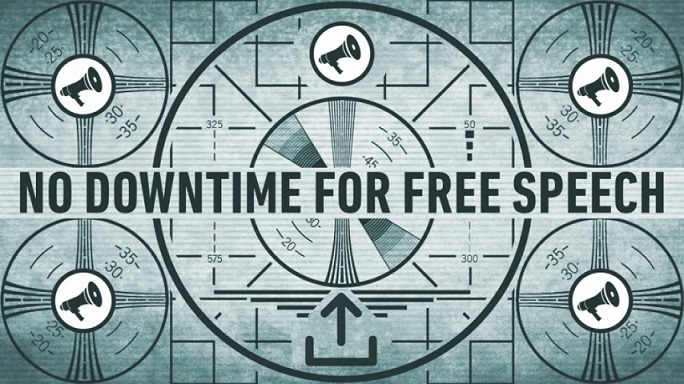

Тематический блог "Вонгола"
Тематический блог "Вонгола"
Под давлением общественности Sony признала, что произведения Баха ей не принадлежат
 Когда разные люди играют одну и ту же музыку, возникает проблема: иногда они звучат одинаково. И если музыка принадлежит композитору, который умер 268 лет назад, оставив свои произведения в общественном достоянии, то кто-то может записать её, а кто-то — выложить в интернете. В этой истории смесь копирайт-ботов и корпоративной непримиримости привела к атаке в духе Кафки.
Музыкант Джеймс Роудс выложил в Facebook видео, где он играет Баха. Компания Sony Music Entertainment заявила, что 47 секунд этого выступления принадлежит ей. В результате Facebook отключил видео.
Это выглядит глупо, но не полностью глупо в мире правообладателей. Такое произошло после того, как Роудс получил от Sony уведомление, заслуживающее места на доске позора.
Один из аргументов в пользу нынешнего процесса фильтрации контента заключается в том, что должна быть система сдержек и противовесов. Уведомления об удалении должен отправлять только владелец авторских прав, который действительно считает, что его права нарушены. И если претензия несправедлива, то встречное уведомление от реального правообладателя исправит ситуацию.
Идея встречных уведомлений не оптимальна. Например, они обременительны для частных лиц и требуют некоторого количества приватной информации. Даже у добросовестных авторов всегда есть страх, что другая сторона всё равно подаст в суд, чего они не могут себе позволить.
Роудс действительно оспорил уведомление и объяснил: «Это моё собственное исполнение Баха. Который умер 300 лет назад. Мне принадлежат все права». Sony отвергла этот довод.
Мы не знаем наверняка, как решаются дела в Sony, но можно догадаться, что причиной бардака стал копирайт-бот или человек, действующий так же механически. Реальный человек увидел бы на видео музыканта, исполняющего произведение, которое старше американского закона об авторском праве. Он бы понял, что компания не может им владеть. Очень похоже, что встречную апелляцию Роудса отклонил тоже бот, потому что мы надеемся, конечно, что вдумчивый человек получил бы его уведомление и одобрил его.
Роудс рассказал свою историю в твиттере, где он получил некоторую поддержку — и осмелился отправить письмо директорам по связям с общественностью Sony Classic и Sony. В конце кнонцов, его видеозапись восстановили. Он написал в твиттере: «А как насчёт тысяч других музыкантов, которые не поступили так же?..» Хороший вопрос.
Ни одна из предполагаемых проверок не сработала. Общественное давление и настойчивость Роудса — единственные причины, почему жалобу рассмотрели, несмотря на то, что правила должны защищать добросовестное использование и общественное достояние.
Сколько ещё нужно доказательств, что копирайт-боты и фильтры дают сбои? Что наделять их такими полномочиями, как это готов сделать Евросоюз, опасно и недальновидно? Информация об этих сбоях появляется примерно так же, как разрешаются конфликты: только если они создают достаточно шума. Сколько ещё авторские работы будут удаляться без права восстановления?